Seguimiento del proyecto
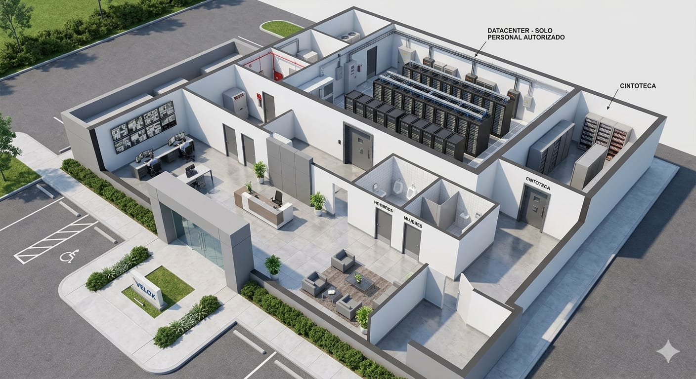
Render 3D — Vista isométrica del edificio completoEl proceso comenzó con un render 3D fotorrealista del edificio completo. Cada zona quedó definida desde el inicio: sala de servidores con racks alineados, cuarto de vigilancia con pantallas de monitoreo, recepción, cintoteca y parqueo.
La zona marcada como "Solo personal autorizado" fue el punto de partida conceptual para el sistema de control de acceso RFID que se implementó después.
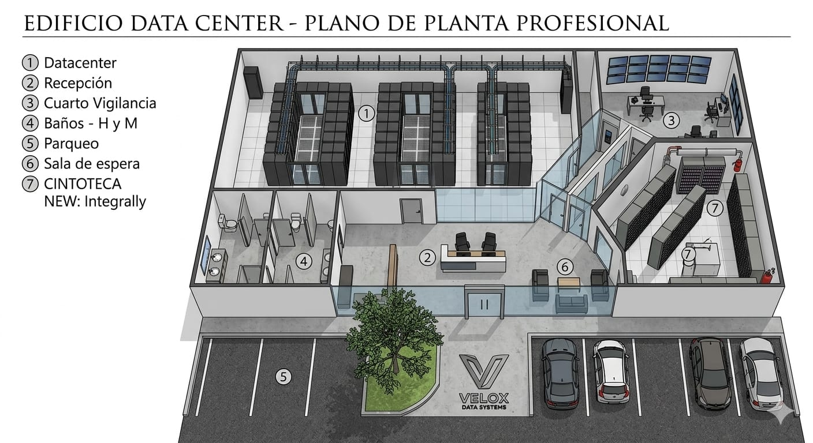
Plano de planta — 7 zonas numeradas y etiquetadasComplementando el render, se elaboró un plano de planta profesional con 7 zonas numeradas: ① Datacenter, ② Recepción, ③ Cuarto de Vigilancia, ④ Baños, ⑤ Parqueo, ⑥ Sala de espera y ⑦ Cintoteca.
Este plano fue la referencia técnica principal durante toda la fase de construcción, definiendo proporciones, flujos de circulación y la ubicación de cada módulo electrónico dentro de la maqueta.
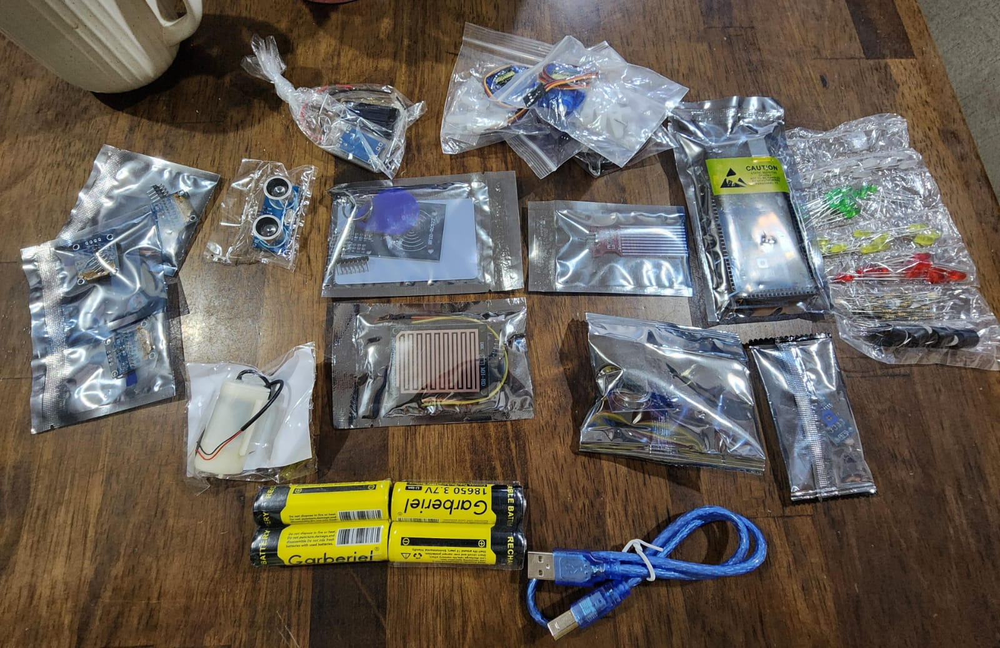
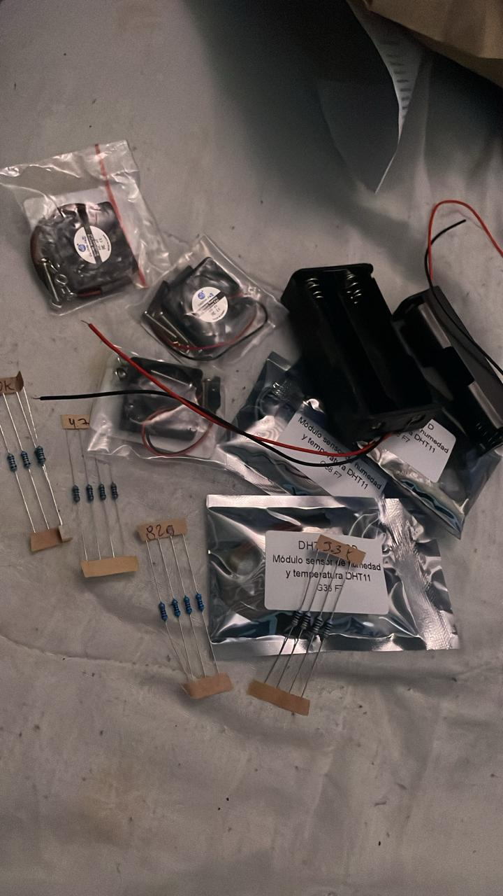
Con el diseño definido, se hizo el inventario completo de componentes. La primera imagen muestra la llegada: módulo RFID RC522, sensor ultrasónico HC-SR04, servomotor, baterías 18650 Garberiel 3.7V, LEDs multicolor, cables jumper y cable USB tipo B para el Arduino.
La segunda imagen corresponde al segundo lote: ventiladores de rack en miniatura para simular el sistema de enfriamiento, sensores DHT11 de temperatura y humedad etiquetados a mano, y resistencias de 47Ω y 820Ω para los circuitos de protección.
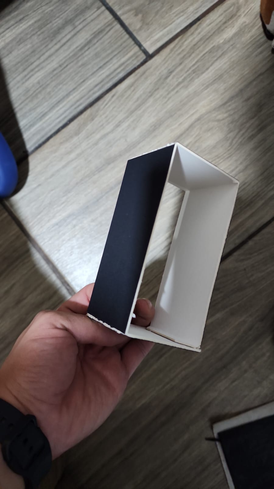
Primera pieza — cartón bicolor cortado y doblado a manoLa construcción física arrancó con cartón negro y blanco medido, marcado y doblado a mano según el plano. El criterio de color fue deliberado: negro por dentro para simular el ambiente controlado de un datacenter real, blanco por fuera para el acabado exterior.
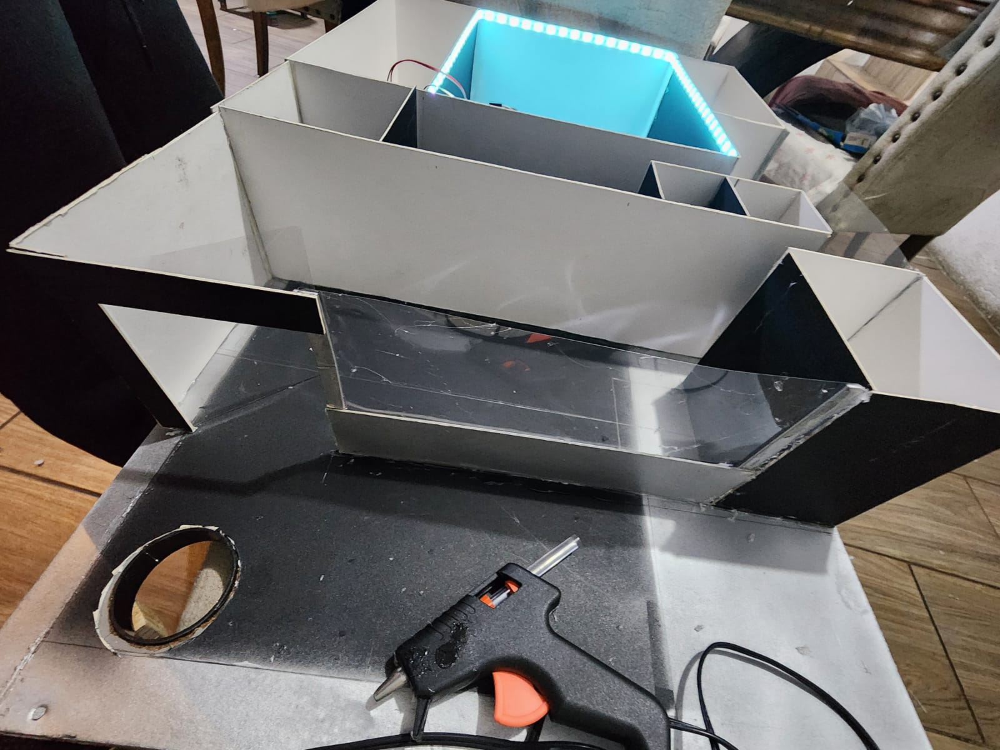
Ensamblaje con LED cyan encendido — sala de servidores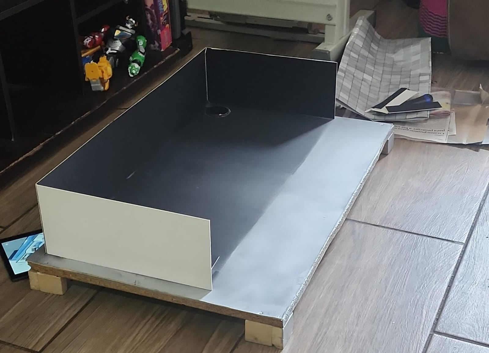
Las divisiones internas se pegaron con pistola de silicón caliente, separando las zonas del plano. En esta fase también se instaló la tira LED cyan que ilumina la sala de servidores — el primer momento en que la maqueta cobró vida con luz.
La estructura exterior quedó montada sobre una base de madera con patas con paredes negras y blancas/plateadas. El agujero en la base permite el paso del cableado de la electrónica hacia el interior.
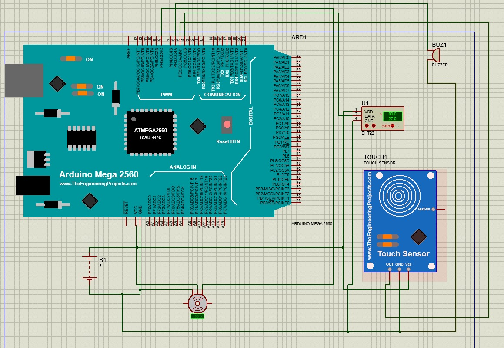
Diagrama en Proteus — Arduino Mega 2560 + DHT22 + Touch SensorAntes de conectar ningún cable físico, se diseñó el circuito completo en Proteus. El esquema muestra el Arduino Mega 2560 (ATMEGA2560) como controlador central, conectado al sensor DHT22 de temperatura y humedad, un Touch Sensor y un buzzer de alarma.
Simular primero permitió detectar errores de conexión y validar la lógica antes de arriesgar los componentes reales. El DHT22 en simulación ya reportaba 80% de humedad y 27°C, valores que luego confirmamos en el dashboard de Grafana.
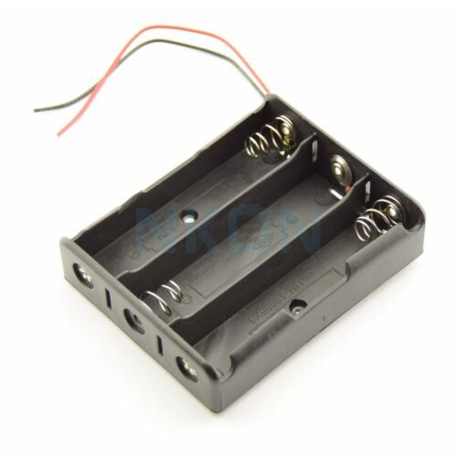
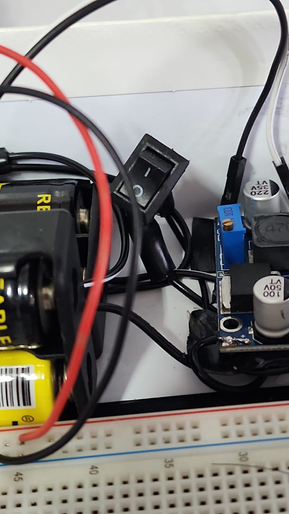
Como fuente de energía se usaron baterías recargables 18650 Garberiel de 3.7V en un portabaterías de 3 slots, entregando ~11.1V que se regulan a 5V mediante un módulo regulador ajustable con capacitores de filtro de 220µF y 100µF.
Este esquema permite que la maqueta funcione completamente autónoma, sin depender de corriente — igual que un sistema real con UPS que mantiene operación ante cortes de energía.
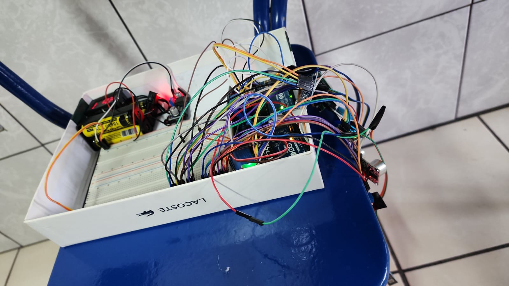
Sistema completo en protoboard — todas las conexiones activasEl sistema completo en fase de ensamblaje: Arduino, protoboard, baterías y todos los módulos corriendo en paralelo. El LED rojo encendido confirma que la alimentación estaba activa y el circuito respondiendo correctamente.
La densidad del cableado refleja la cantidad de módulos integrados simultáneamente: RFID, sensores de temperatura, ventiladores, LEDs indicadores y el servomotor — todo controlado desde el mismo Arduino Mega.
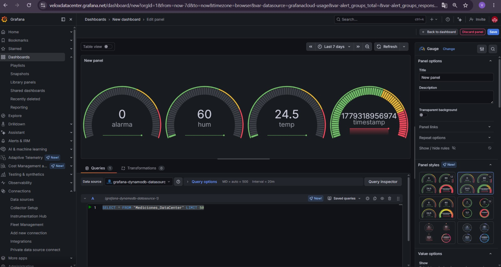
veloxdatacenter.grafana.net — datos en tiempo realLos datos de los sensores se publican en un dashboard de Grafana Cloud en veloxdatacenter.grafana.net. El panel muestra 4 gauges en tiempo real: Alarma (0 = sin incidente), Humedad (60%), Temperatura (24.5°C) y el timestamp del último dato recibido.
La fuente de datos es Amazon DynamoDB, donde el Arduino publica mediciones a través de una función Lambda. La query SELECT * FROM "Mediciones_DataCenter" LIMIT 50 trae los últimos registros para construir las gráficas de tendencia.
El módulo RC522 valida cada tarjeta en milisegundos. Si el UID está registrado, el servomotor abre la puerta simulada y el LED verde se activa. Si la tarjeta es desconocida, el LED rojo y el buzzer alertan el intento fallido.
Al presentar una tarjeta con UID no registrado, el sistema activa el LED rojo y el buzzer, registrando y rechazando el intento de acceso no autorizado.
Con un UID válido, el Arduino acciona el servomotor que simula la apertura de la sala de servidores. El LED verde confirma el acceso y el servo regresa a posición cerrada automáticamente.